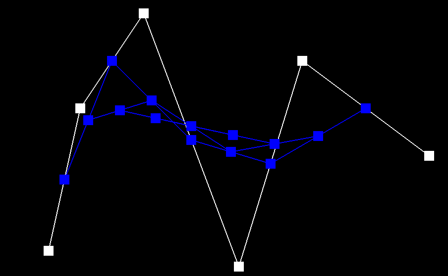
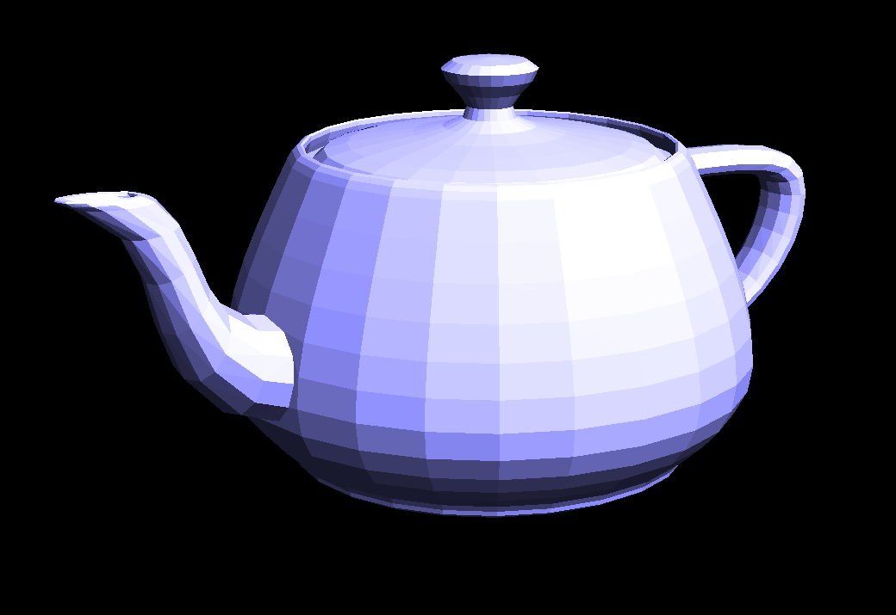

CS184/284A Summer 2025 Homework 2 Write-Up
Link to webpage: cal-cs184.github.io/hw-webpages-su25-ryantrinh05/hw2/index.html
Link to GitHub repository: github.com/cal-cs184/hw2-meshedit-ryantr
Overview
In this homework, I first implemented De Casteljau Algorithm to generate Bezier curves and surfaces. It involved lot of linear interpolation as well as building up from just 1 step at a time, to 1 dimension, all the way to 2D with the Bezier surfaces. I then used the previously defined Halfedge data structure to implement both Phong shading and the local/global operations that a user would need for a 3D mesh. Starting with the flip and split local operations, I utilized them in tangent with other mesh operations to finally end up with the loop subdivision global operation that can help users upsample and smooth out their meshes.
All in all, I found the combination of Bezier curves/surfaces and triangle meshes to be a very interesting and fun topic to cover. Ever since high school I've loved 3D modeling within blender and CAD modeling, so its been facinating learning about how complex the basic operations are and how they work at a low level. In particular, the final subdivision task was the most enjoyable as not only did it incorporate everything else, but its cool to learn just how foundational operations such as loop subdivision are, especially as I've never really given it much of a second thought previously.
Section I: Bezier Curves and Surfaces
Part 1: Bezier curves with 1D de Casteljau subdivision
De Casteljau's algorithm is a technique used to create Bezier curves, which are smooth curves approximated from a few control points. To make a n-degree curve, n+1 control points are needed. De Casteljau's algorithm works with multiple steps in which we use linear interpolation to find the intermediate points between the control points, or between previously calculated intermediate points if we are beyond the first step. The interpolation is done using parameter t, which ranges between 0 and 1, with 0 representing the starting control point and 1 representing the ending control point.
In my implementation, the function BezierCurve::evaluateStep(...) takes in a
std::vector<Vector2D> of the initial/intermediate control points and calculates
one step of De Casteljau's Algorithm. This involves iterating through each pair of control points and
performing a linear interpolation between the points ((1 - t) * p_i + t * p_i_1). Using the
std::vector push_back method, I append the calculated control point into a previously initialized
std::vector. This vector is then returned after all pairs of
control points are iterated through. To run the full algorithm for an initial set of control points,
evaluateStep(...) is run recursively until it only returns a single control point.
Here is an example 2x2 gridlike structure using an HTML table. Each tr is a row and each td is a column in that row. You might find this useful for framing and showing your result images in an organized fashion.
|
|
|
|
|
|

|
|
|
|
|
|
Part 2: Bezier surfaces with separable 1D de Casteljau
De Casteljau's Algorithm extends to Bezier surfaces by treating them as intersections of orthogonal Bezier curves. This means that each surface patch is initially considered as rows or columns of Bezier curves, upon which the Bezier curves' algorithm can be used. The calculated points based on a given u parameter are then compiled together to form the control points along the corresponding orthogonal axis. Finally, using the v parameter to run the De Casteljau's curves algorithm once again, the final points that make up the surface are found.
My implementation follows this process exactly, making use of BezierPatch::evaluateStep(...) and
BezierPatch::evaluate1D(...) to run the surface algorithm. evaluateStep operates almost exactly
the same as in Task 1, except that it deals with Vector3D rather than Vector2D.
evaluate1D then makes use of evaluateStep by looping through all of the control points along a given axis
to find the final interpolated point. While I had a bit of confusion here regarding how to loop through
the multiple evaluation steps, I ended up using a while loop to check when there was only
1 control point remaining. This helped cover edge cases such as if only 1 control point was initially given.
In my Bezier::evaluate(...) function, I began by iterating through all of the rows of the
control points using evaluate1D with parameter u, storing them in a vector of Vector3D points called pts.
This loop allowed for the calculation of the Bezier curves in the first direction and gave me the
corresponding control points to evaluate in the second dimension. So by using evaluate1D(pts, v),
I ended up with the point on the Bezier surface.
|
|

|
Section II: Triangle Meshes and Half-Edge Data Structure
Part 3: Area-weighted vertex normals
For area-weighted vertex normals, I first used a do-while loop, similar to printNeighbourPosition
that starts with the vertex's half edge and rotates around through the use of HalfedgeCIter h_twin = h->twin();
and h = h_twin->next(); to access each of the surrounding faces. Unless printNeighbourPosition, this
loop grabs all of the faces' verticies using a multiple h->next() and ->vertex().
With all three points of a face, I calculated the vectors between p0, the starting vertex, and p1/p2 to get e10/e20
respectively. With these two vectors, I calculated the cross product using cross(e10, e20); and added it to
a previously initialized Vector3D called N. In order to make sure that the normals pointed outwards, I did
e10 x e20, as e10 is always the "right" vector, and by the right-hand rule, meant that the resulting vector points
outwards. Finally, I used N.unit() to normalize the total N vector. As the cross product is proportional to the
area of a triangle, by summing together the cross products prior to normalizing the faces are weighted by their area.
|

|

|
Part 4: Edge flip
To implement the edge flip operation, I first began by using e0->isBoundary() to check if
the edge is on the boundary of the mesh. If so, no flip operation should happen so I just returned the
initial edge. If not, I proceeded by obtaining pointers to all of the elements related to
the edge being flipped. This includes both faces, all 4 vertices, and all 6 half edges. As we are only doing
an edge flip for this task, there is no need to add or delete any elements, so all that is left is to
reassign pointers. Starting with the halfedges, I used the setNeighbors(...) function to reassign
their next, vertex, and face members. An interesting part of this process was that as nothing was being added
or deleted, both the twin and edge attribute didn't need to be changed for the half edges as they still
correspond to the exact same elements after the flip.
Next was reassigning the pointers of the vertices and the faces. Unlike the half edges, all of these elements' pointers had to be reassigned as it is unclear if they still refer to the proper half edge without explicitly checking each one. Most notably, the vertices, needed to have their halfedges reassigned as each vertex had an outgoing edge altered.
Even though the implementation itself didn't involve too complex code, there were still a lot of issues regarding
debugging. For instance, in my first implementation, whenever I had flipped an edge it would not only not display
one of the faces, but it would remove the edge as well. This led me to believe that there were serious issues with
my reassignments, causing me to change all of my halfedge setNeighbors code. However, this still didn't
help as the issue the whole time was misinputting a single vertex for my halfedge assignment.
|
|

|
Part 5: Edge split
For my edge split operation, I incorporated a lot of parts from my edge flip operation. This included starting the
same by checking if the edge was on a boundary and then iterating through the various elements to get pointers to each of them.
Then, I used the vertices of both the input edge's halfedges to find its midpoint m by taking the average
of the two.
Initially, my plan was to treat the original 2 triangle faces as the top half of the final 4 triangles. I thought
that this would be the most effective strategy as it would minimize the amount of pointers I would have to reassign and
I would only really have to change one halfedge->vertex() to be equal to the midpoint instead of the bottom vertex.
And while this seemed like a good idea to me, I realize that it created too much unnecessary work as it would require me
to give the new bottom edges the pointers the old bottom edges had, pointers such as twin().
As a result, I decided to take the more straightforward approach of creating 3 new central edges, along with their
associated elements.
This included creating 6 new halfedges, 3 new edges, and 2 new faces, on top of the midpoint. Afterwards, my implementation
involved going through each of the new elements and assigning them the appropriate pointers given what the final structure should look
like. It also involved changing the original surrounding halfedges, as their faces() and next() members were
now changed.
An interesting element of this edge split operation was that a lot of the old elements didn't need their pointers altered much. To illustrate, in the case of edge flipping, I needed to reassign the halfedges of most of the vertices as the flipped edged could've been the halfedge they were pointing too. In edge splitting, besides the bottom vertex, there were no changes to the original outgoing halfedges, meaning that they could be left unchanged.
|
|

|
|
|

|
Part 6: Loop subdivision for mesh upsampling
At a high level, my loop subdivision implementation just followed the process of calculating new vertex positions, performing splits on each of the original edges, and finally flipping the new edges that connected old and new vertices.
Going into more specifics, I computed the new positions of the vertices by using the
Loop Subdivision Rule. This rule involves taking all of the neighboring vertices of the main vertex v
and assigning them a weight based off of v's degrees. The new vertex position is then calculated based off of
the weighted sum of the neighboring vertices, though heavily weighting its original position. These new positions
help in the overall subdivision by regularizing the distances between points, creating a smoother geometry. It
is important to assign these positions into Vertex->newPosition though as updating the points too
early would throw off the other steps.
The second part of my implementation is calculating where the new points would be generated. This is very similar to the previous formula as the new position is calculated based off of a weighted sum of the two nearby faces' vertices. Directly adjacent vertices are given a weight of 3/8 while the slightly further ones are given a weight of 1/8. The calculation of these points similarly help promote more uniformity during the subdivision as without them, it would result in jagged corners on the mesh.
The next components involve the splitting and flipping of the edges. Each of the original edges are split using the
previously defined HalfedgeMesh::splitEdge(...) to increase the number of faces by a factor of 4.
During this process, the newly generated edges are assigned true for their isNew attribute, denoting that
they aren't one of the original edges. Additionally, the created midpoints are also marked as isNew.
This is relevant as the HalfedgeMesh::flipEdge(...) is then used on
the new edges that connect new vertices with old verticies. This is done such that the new faces are more uniform,
helping maintain the mesh's original structure more. Finally, the vertices' positions are updated to the
new values, completing the subdivision
While I found this task interesting, I had the most difficulties with its implementation. More specifically, on steps 3 and 4: the splits and flips. This is because originally I assigned all of the edges connecting to the midpoint as new edges. My reasoning for this was that I used a for loop to iterate through all of the edge apart of the mesh. In order to not loop infinitely, I only called splitEdge on "old" edges. So by labelling all of those edges as new, I avoided infinite loops. However, this caused issues with the flipping as it classified the edges that composed of the original edges as "new", leading to them being improperly flipped. To solve this issue, I iterated through a vector of the original edges rather than the entire mesh's edges. This meant that I wasn't at risk of infinite loops anymore while splitting and I could mark only the appropriate edges as new.

|

|
As more and more loop subdivisions occur, the mesh smooths more and more, almost losing the original shape and transforming more into a sphere. This is especially clear when dealing with sharp corners and edges as they are noticably smoothed out. To illustrate, the top left image began as a cube, but as more subdivisions occurred became more sphereical. On the other hand, the right image was pre-splitted on its edges. As a result, it maintained more of its rigidity as the increased number of faces near the edge meant less drastic changes between subdivisions
|
|

|

|
In the images above, the effects of pre-processing on a 3D mesh can be seen. The image in the middle is the cube after a few loop subdivisions. Even though the entire mesh is subdivided at the same time, it does appear to be asymmetric after the divisions. This has to do with the fact that the cube wasn't composed of symmetrical faces. Each face had a diagonal edge connecting the top left corner with the bottom right corner. Each subsequent subdivision amplified this difference, resulting in its asymmetric look. To counter this issue, we can use pre-processing with splits and flips on the cube, evident by looking at the image on the right. With splits and flips, the uneven amount of faces and edges can be alleviated, creating a more uniform topology on the mesh. The more uniform topology means that the subdivision occur evenly as well, resulting in a symmetrical subdivided mesh.